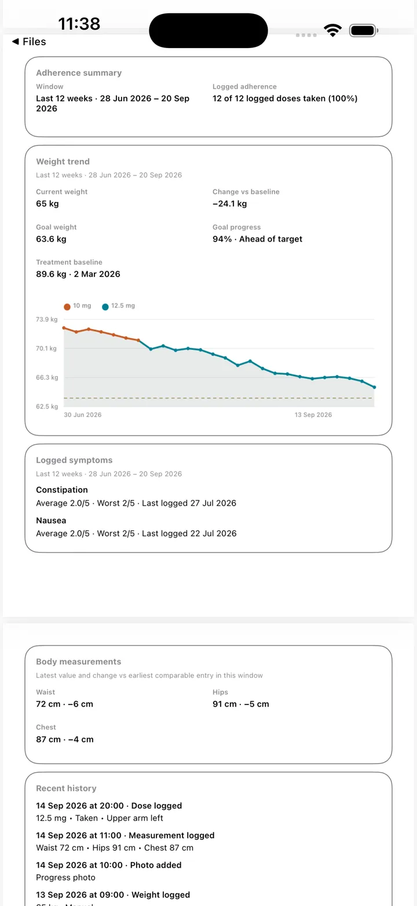

Sintomas
Salve como se sentiu e quando
Registre sintomas e possíveis efeitos colaterais com datas e notas, sem transformar o histórico em aconselhamento médico.
O acesso ao Apple Health é opcional e somente para leitura. O OneGLP lê apenas os dados que você autoriza e não grava dados no Apple Health.
Registre sintomas e possíveis efeitos colaterais com datas e notas, sem transformar o histórico em aconselhamento médico.
Revise os registros de sintomas com gráficos, histórico de peso, alimentação e fotos.
O OneGLP mantém os registros no iPhone e permite ligação opcional de apenas leitura ao Apple Health e exportações escolhidas por si.
O OneGLP permite registar sintomas e possíveis efeitos colaterais junto a doses, peso, apetite, alimentação e fotos. O histórico é privado e destina-se a consulta pessoal; o aplicativo não diagnostica, interpreta sintomas ou presta aconselhamento médico.
O registro regular de sintomas ajuda a conservar uma descrição mais clara do que aconteceu.
As notas ficam próximas das doses, do peso, do apetite e dos dados de alimentação registados.
Segurança: A Exposição Estimada é um cálculo aproximado para acompanhamento pessoal, não uma concentração sanguínea medida nem aconselhamento médico. Não a utilize para decidir doses. Leia a segurança médica e a metodologia.
| Nome | OneGLP |
|---|---|
| Plataforma | iPhone e iPad |
| Categoria | Acompanhamento privado de GLP-1 |
| registros | Doses, lembretes, locais de aplicação, peso, sintomas, apetite, alimentação, notas, fotos e Apple Health opcional somente para leitura. |
| Conta | Não é obrigatória uma conta para as funções básicas. |
| Privacidade | Dados mantidos localmente, salvo exportação, compartilhamento ou reposição da cópia escolhida pelo usuário. |
| Apple Health | Ligação facultativa e somente para leitura. O OneGLP não escreve no Apple Health. |
| Exportações | CSV e JSON básicos gratuitos; Premium adiciona relatórios e PDF para profissionais de saúde. |
| Limites médicos | Apenas informação pessoal, sem diagnósticos ou aconselhamento de doses. |
| App Store | OneGLP na App Store |
Publicado por Steven Good. O OneGLP não substitui instruções oficiais nem aconselhamento de profissionais de saúde.


As imagens ilustrativas mostram o aplicativo em inglês.
Sim. Você pode salvar sintomas e possíveis efeitos colaterais para consulta pessoal.
Não. O OneGLP não diagnostica nem interpreta os sintomas.
CSV e JSON estão disponíveis para os registros básicos; Premium adiciona relatórios mais detalhados e PDF para profissionais de saúde.
Sim. Você pode revisar os sintomas juntamente com o histórico de peso.
Sim. As notas sobre apetite e alimentação podem aparecer junto aos sintomas e às doses.
Não. Serve apenas para acompanhamento pessoal.